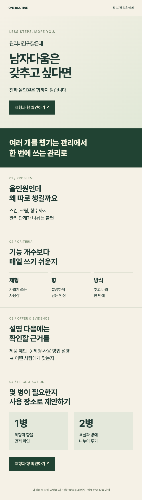
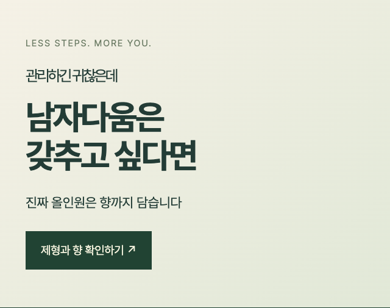

전환율을 높이는
팔리는 랜딩페이지
제작법
무슨 말을, 어떤 순서로 보여줄지
첫 화면부터 구매 버튼까지 설계하세요


원문으로 재구성한 학습 예제 · 편집 프로그램 제공 상품이 아닙니다
설명만 읽는 책에서
내 페이지를 만드는 책으로
책의 실습을 따라
내 상품의 문장과 순서를 채웁니다
멈춰야
하는가대상 / 문제 / 결과
첫 화면 카피
대상·문제·결과를
한눈에 보이게
페이지 설계도
고객이 납득하는
설명의 순서
완성 페이지 초안
카피·근거·가격을
하나의 흐름으로
본문 실습으로 작성할 결과물 예시입니다
첫 화면에서
“내 얘기네” 싶도록
프리미엄
남성 올인원

상품명보다
고객이 원하는 결과
책 9장에서 대상·문제·결과·방식·행동을 정하고, 30장의 완성 예제로 배치 순서를 확인합니다.
정보를 쌓기 전에
설명의 순서부터
고객이 궁금해할 때
답을 보여줍니다
16장 선택 기준, 19장 근거, 21장 후기, 25장 신청 이후 안내를 연결해 내 페이지의 빈 곳을 찾습니다.
처음부터 끝까지
한 장으로 완성
멈출 이유를
첫 문장으로
고르는 기준과
맞는 근거
구성과 버튼을
사용 상황에 맞게
30장 완성 초안의 내용을 발췌·요약해 직접 코딩한 학습 예제
이미지·완성 디자인 템플릿 제공을 뜻하지 않습니다
직접 팔아온 경험을
설계의 기준으로
메이크프렌즈 누적 매출
2021.01 — 2024.04
(주)메이크프렌즈 전체 매출 · 월별 원장 40개월 합산
각 막대는 2021년 1월부터 해당 시점까지의 누적액
30개 장으로 배우는
랜딩페이지의 설계 순서
랜딩페이지의 역할
상품 소개보다 고객이 판단하는 순서
히어로 섹션
대상·문제·결과·방식·행동
문제 제기와 공감
고객의 불편을 구체적인 장면으로
제안과 선택 기준
기능 설명을 고객의 언어로
신뢰와 행동
후기·가격·혜택·버튼·신청 이후
완성 페이지 조립
한 상품으로 초안 작성과 이탈 점검
이런 분께 권합니다
방문은 있는데 구매가 고민인 판매자
상세페이지를 직접 써야 하는 운영자
AI가 쓴 원고의 판단 기준이 필요한 분
직접 읽고
AI와 함께 고치고
전자책과 라운지 열람
설명 순서와 실습을 따라 읽기
브레인 파일
장별 MD · AI에_넣을_책전체.txt
책 파일과 내 상품 정보를
ChatGPT나 Claude에 첨부합니다
참고한 장을 확인하며
헤드라인과 제안 문구를 고칩니다
결제 후 같은 이메일로
라운지에 로그인하면 읽을 수 있습니다
구매 전 확인하세요
Q디자인 도구 사용법도 나오나요?
고객이 읽고 판단하는 순서와 문구를 설계하는 책입니다. 디자인 도구의 버튼을 따라 누르는 매뉴얼은 아닙니다.
QAI를 꼭 써야 하나요?
책을 읽고 직접 실습해도 됩니다. AI를 활용할 때는 책 파일과 내 상품 정보를 함께 전달하세요.
Q내 상품에 바로 쓸 수 있나요?
본문 예제를 참고해 고객·상품·근거를 내 정보로 채웁니다. 마지막 파트에서 하나의 페이지 초안으로 조립합니다.
내 상품이 팔리는
전자책 + 브레인 파일 + 라운지 열람
결제한 이메일로 라운지 로그인